Welcome to the Great Auk Page
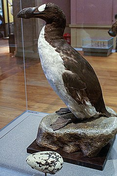 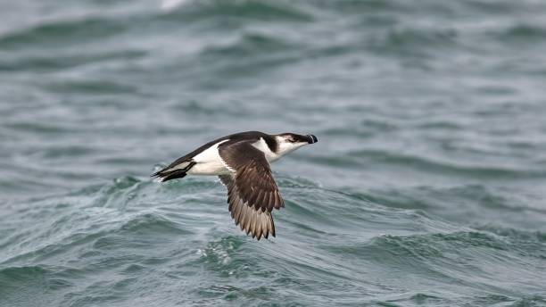
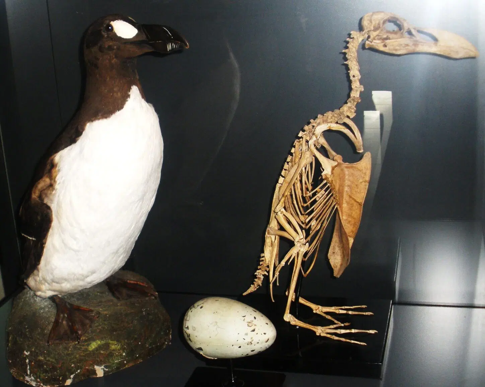
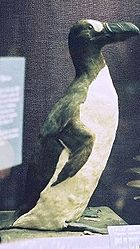
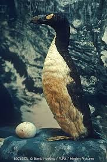
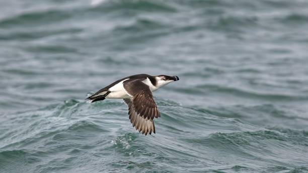
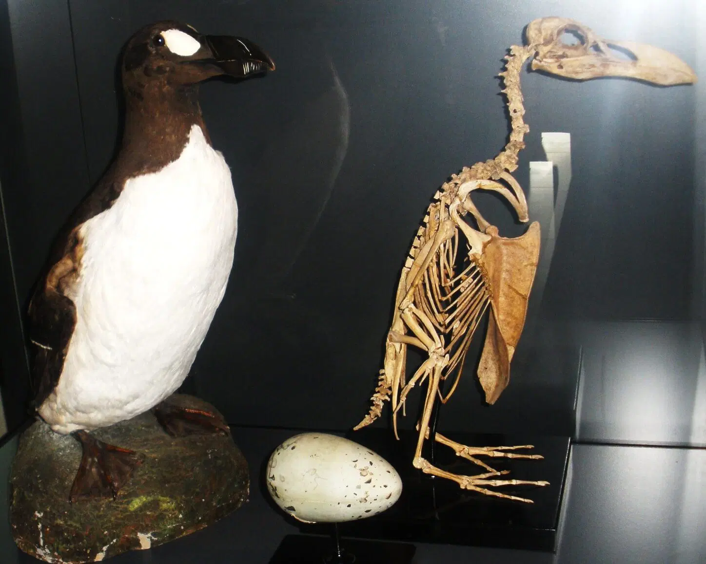
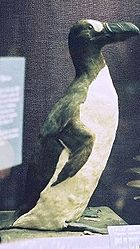
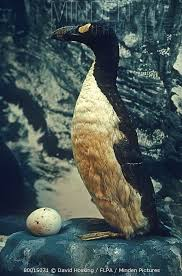
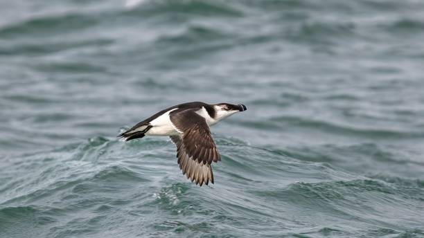
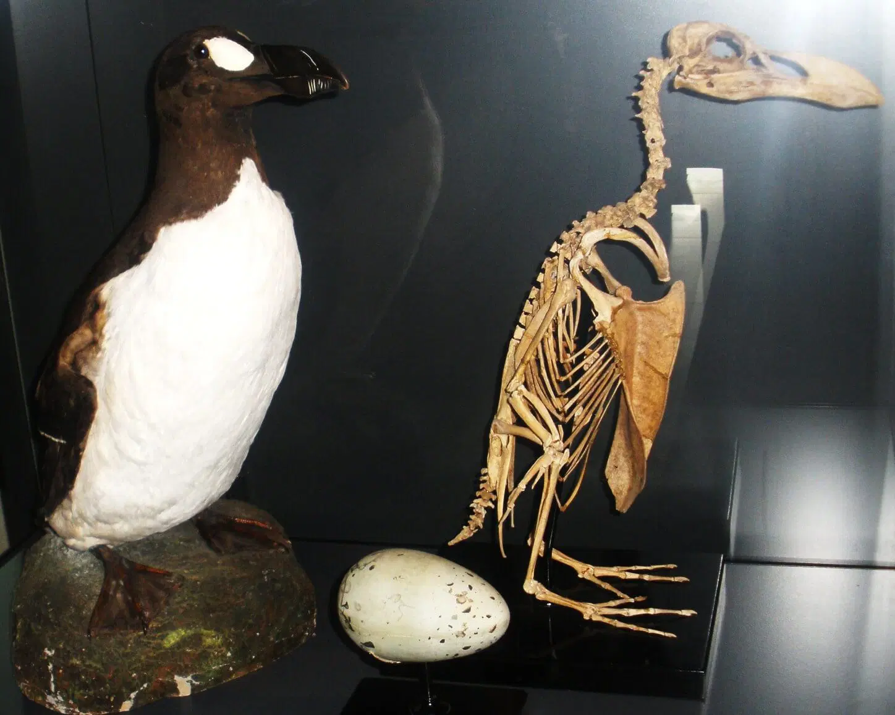
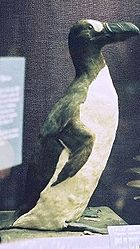
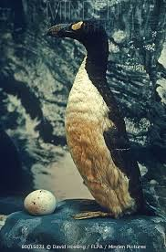
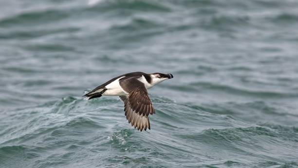
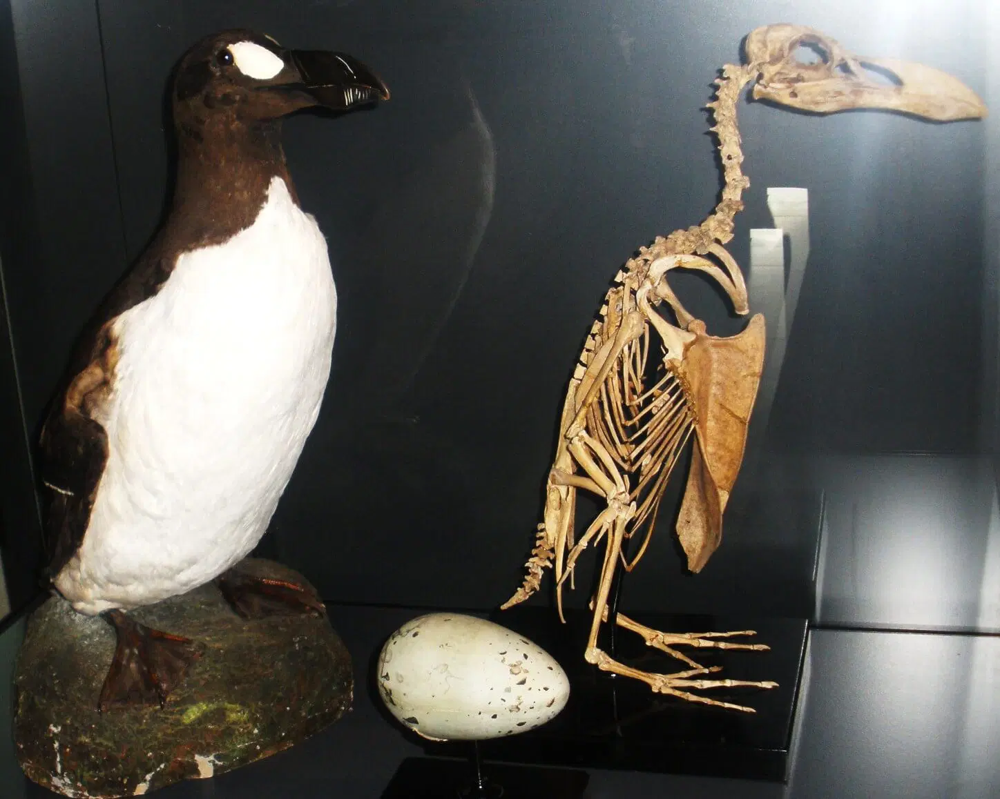
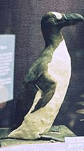
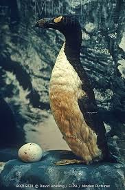
The ancient auk, a remarkable seabird that once dominated the coastal regions of the Northern Hemisphere, stands as a symbol of nature’s ability to adapt to harsh environments. Fossil evidence indicates that early auks were larger and sturdier than their modern counterparts, with some species, like the Great Auk, evolving to become flightless. This adaptation allowed them to conserve energy while mastering the art of swimming and diving, making them formidable predators in the marine ecosystem. With wings adapted for underwater propulsion, ancient auks could dive to impressive depths, using their agility and precision to capture fish and other small sea creatures. The Great Auk, in particular, was distinguished by its striking black and white plumage, a feature that added to its allure and mystique.
Ancient auks were integral to the marine ecosystems they inhabited, playing a vital role in maintaining the balance of the food web. As efficient predators, they helped regulate fish populations, ensuring the health and stability of their environments. Their nesting colonies, often located on isolated rocky islands, contributed to nutrient cycling by enriching the surrounding soil with guano, benefiting other plant and animal species. These seabirds also served as a food source for larger marine predators and coastal scavengers, highlighting their interconnectedness within the ecosystem. The presence of auks signified a thriving and diverse marine habitat, where each species contributed to the ecological harmony.
However, the ancient auk's dominance began to wane due to a combination of natural and human-induced challenges. Shifting climates over millennia altered their habitats, forcing populations to adapt to changing sea levels and prey availability. While many auk species survived these environmental changes, the Great Auk faced an additional threat: human exploitation. Its inability to fly made it an easy target for hunters, who sought its meat, eggs, and feathers. By the 19th century, relentless hunting, coupled with habitat destruction, had driven the Great Auk to extinction. The last known pair was killed on a small island off Iceland in 1844, marking the end of this iconic species.
The extinction of the Great Auk has left an indelible mark on the study of conservation biology, serving as an early warning about the consequences of human impact on wildlife. Fossils and historical accounts of the auk provide invaluable insights into the evolution and adaptations of seabirds, offering clues about how species respond to environmental pressures. These findings have informed modern efforts to protect vulnerable marine bird populations, emphasizing the importance of safeguarding habitats and mitigating human activities that threaten their survival. The story of the Great Auk underscores the delicate balance of marine ecosystems and the far-reaching effects of their disruption.
Today, the ancient auk stands as a poignant reminder of both the beauty and fragility of nature. Its legacy lives on in the thriving populations of its modern relatives, such as puffins, guillemots, and razorbills, which continue to grace the coasts of the Northern Hemisphere. By studying the ancient auk and its tragic decline, scientists and conservationists gain valuable knowledge that helps guide efforts to preserve biodiversity and combat the ongoing threats of climate change and habitat destruction. The ancient auk’s story teaches us the importance of coexistence with nature and our collective responsibility to protect the intricate web of life that sustains our planet.